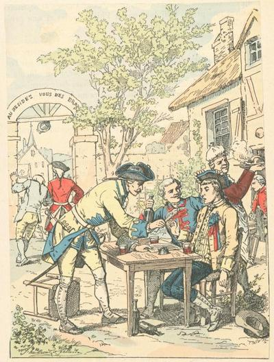

Silvestrik - Version 1 - Mélodie 1
Rapprochement avec "An distro eus a Vro-Zaoz -Le Retour d'Angleterre" du "Barzhaz Breizh"
Texte recueilli par François-Marie Luzel:A Duault dans les Côtes-d'Armor
Publié dans "Gwerzioù Breizh-Izel" en 1868
Mélodie
Air publié dans "Musiques bretonnes" par Maurice Duhamel
recueilli auprès de Maryvonne Bouillonnec de Tréguier
Arrangement Christian Souchon (c) 2008
Source: le site de M.Quentel, "Son ha ton" (voir "Liens")
|
VERSION "GWERZIOU BREIZ IZEL" I Me 'm euz ur mab Silvestrik, ha n'am euz nemet-han, Hag 'n euz bet hardison da zont d'am glac'haran ; Bet 'n euz ann hardieges da vont a-rok he benn, Ema zoudart en arme, dirag he gabitenn. Me 'm euz bet ar vadeles da vonet d'hen goulenn, Dirag kalz tud-a-feson, digant he gabitenn. Ar c'habitenn, p'am gwelaz, a chommaz saouezet : - Ganac'h-c'hui, den ansienn, me a zo saouezet ! Lemel digant ar roue 'sonjoc'h he zoudarded ? Touchet hen euz paeamant, ambarkin a zo red. - - Lavaret d'in, kabitenn, pegement eo koustet, Ha m'am euz arc'hant 'walc'h, a vezo rambourset. - - Hag ho pe pemp kant skoed, n'ho pe ket ann-ez-han, Rag n'euz soudart er vandenn a blij d'in evel-t-han. - II Pa oann-me en Roz-Julou em gwele kousket-mad, Me 'glewe merc'hed 'r Roudour o kana zon ma mab. Ha me 'treï euz ar voger, hag o komanz goela : Aotro Doue, Silvestrik pe-lec'h out-te brema ? Marteze te 'zo maro pemp kant lew diouz-in Taolet da eskernigou d'ar pesked da zibri ! Taolet da eskernigou da zibri d'ar pesked, Ma vijent ganin brema, me 'm boa ho briated ! Me 'm euz un evnik bihan du-man, en toul ma dor, Bars-e-kreiz tre daou vean, en un toul ar vogor; Bars-e-kreiz tre daou vean, en un toul ar vogor, Tromplet eo ma speret, mar n'ema ket en gor. Mar deu d'am evn da zevel, da ober bloaves-mad, Me a lako ma evnik d' vont da welet ma mab. - Oh ! ia, skrivet ho lizer, denik-koz, pa garfet, Me a zo prest d'hen dougenn raktal en ho reket. - Pa oa skrivet al lizer, laket d'ann evn 'n he vek, Etrezeg Metz-sant-Lauranz gant-han 'z eo partiet... - Arretet-c'hui, Silvestrik, lennet al lizer-ma, A zo digasset d'ac'h-c'hui gant ho tad 'zo duma. - - Diskennet, evnik bihan da vordik ann ablestr, (3) Ma skrivinn d'ac'h ul lizer da gass d'am zad d'ar ger; Ma skrivinn d'ac'h ul lizer ewit laret d'ez-han Barz pemzek dez a hidu me em gavo gant-han..... - III - Bonjour d'ac'h, evnik bihan, brema pa 'z oc'h c'hui bet; Hah hen 'zo iac'h Silvestrik, mar ho euz-han gwelet? - - Ia, iac'h ez eo Silvestrik, komzet am euz gant-han, Bars pemzek dez a hidu, en em gavo aman..... - Pa oa ann tad glac'haret ho ober he ganvou, Ez oa he vab Silvestrik 'n toul ann or o selaou : - Tawet, tawet, eme-z-han, tad a volonte-vad, Na skuillet ken a zaelou, setu aman ho mab; Na skuillet ken a zaelou, setu aman ho mab, O tizreï euz ann arme, ma fardonet, ma zad : Dalit c'hui ma c'horn-butun ha ma ziou bistolenn, Ar re-ze a roann d'ac'h ewit ho pinijenn ; Ewit ma c'hallfet laret ho po maget ur mab Ewit ho glac'hari : ma fardonet, ma zad. - |
RAPPROCHEMENT AVEC BARZHAZ BREIZH (2)Me'm eus va mab Silvestig ha n'em eus nemetañ A ya da heul ar strollad, gant marc'heien ar ban. 3. Un noz e oan em gwele, ne oan ket kousket mat, Me gleve merc'hed Kerlaz a gane son va mab; Ha me sevel em c'haoze raktal war ma gwele: - Aotroù Doue! Silvestik, pelec'h out-te bremañ ? 4. Marteze emaout ouzhpenn tric'hant lev deus va zi Pe taolet 'barzh ar mor bras d'ar pesket da zebriñ; (10) Mar kavfen da eskern paour taolet gant ar mare, Oh ! me o dastumfe hag o briatefe.- 6. Me am eus ur goulmig c'hlas e kichenig va dor, Hag hi e toull ar garrek war benn ar roz e c'hor; (6) Hag hi e toull ar garrek war benn ar roz e c'hor; (6) Me stago d'eus he gouzoug, me stago ul lizhzer Gant seienn va eured, ra zeuy va mab d'ar gêr. 7.- Sav alese, va c'houlmig, sav war da zivaskell Da c'hou't mar te a nijfe gwall bell dreist ar mor bras, (8) - Setu koulmig c'hlas[ ] Me hi gwel erru d'ar gwern,  |
TRADUCTION (version "GUERZIOU") I J'ai un fils Sylvestre, et je n'ai que lui, Et il a eu la hardiesse de venir m'affliger; Il a eu la hardiesse d'aller au-devant de sa tête, (1) Il est soldat dans l'armée, devant son capitaine. J'ai eu la bonté d'aller le demander, Devant beaucoup de gens honorables, à son capitaine. Le capitaine, quand il me vit, resta étonné; - Par vous, vieillard (dit-il), je suis étonné : Vous pensez enlever au roi ses soldats? Il a touché son payement, (2) il faut qu'il s'embarque. - - Dites-moi, capitaine, combien il a coûté, Et si j'ai assez d'argent, il sera remboursé. - - Vous auriez cinq cents écus, que vous ne l'auriez pas, Car il n'y a pas dans la compagnie de soldat qui me plaise autant que lui. - II Quand j'étais à Roz-Julou, dans mon lit, bien couché, J'entendais les filles du Roudour chanter la chanson de mon fils. Et moi de me tourner du côté du mur et de commencer à pleurer : Seigneur Dieu! Sylvestre chéri, où es-tu à présent? Peut-être es-tu mort à cinq cents lieues de moi, Tes chers os jetés aux poissons à manger! Tes chers os jetés à manger aux poissons, Si je les avais maintenant, je les embrasserais. J'ai un petit oiseau, ici, près le seuil de ma porte, Entre deux pierres, dans un trou du mur; Entre deux pierres, dans un trou du mur, Et je me trompe s'il n'est pas à couver. Si mon oiseau vient à lever (faire éclore), à faire bonne année, Je ferai que mon oiseau chéri aille voir mon fils. - Oh ! oui, écrivez-lui votre lettre, cher vieillard, quand vous voudrez, Je suis prêt à la porter tout de suite, à votre requête. - Quand la lettre fut écrite, mise à l'oiseau dans le bec, Vers Metz en Lorraine avec lui elle partit..... - Arrêtez-vous, cher Sylvestre, lisez cette lettre-ci, Qui vous est envoyée par votre père qui est chez nous. - -- Descendez, petit oiseau, au bord de mon navire (?) Que je vous écrive une lettre à porter à mon père à la maison ; Que je vous écrive une lettre pour lui dire Que dans quinze jours, à partir d'aujourd'hui, je me trouverai auprès de lui..... - III - Bonjour à vous, petit oiseau, à présent que vous êtes revenu; Mon cher Sylvestre est-il bien portant, si vous l'avez vu? - -- Oui, Sylvestre se porte bien, je lui ai parlé, Dans quinze jours, à partir d'aujourd'hui, il se trouvera ici... - Pendant que le père affligé se lamentait, Son fils chéri Sylvestre était au seuil de la porte à l'écouter. - Taisez-vous, taisez-vous, dit-il, père de bonne volonté, Ne versez plus de larmes, voici votre fils. Ne versez plus de larmes, voici votre fils, Qui revient de l'armée; pardonnez-moi, mon père. Prenez ma pipe et mes deux pistolets; Je vous les donne, pour votre pénitence, Afin que vous ne puissiez dire que vous avez nourri un fils Pour vous affliger. Pardonnez-moi, mon père! - Notes de Luzel (1) Faire un coup de tête. 2) Sa prime (3) La chanteuse prononçait ablest, mot inintelligible ; elle devait peut-être dire ma lestr, mon navire. Peut-être aussi le mot ablestr désigne-t-il quelque partie d'un navire, puisque, comme nous l'avons vu au vers 10, Sylvestrik était marin, quoique son père lui envoyât son petit oiseau à Metz en Lorraine. |
English Translation
Silvestric
|
I - I have a son, Silvestric He is my only son, He was so bold As to cause me sorrow. He was so bold As to act out of caprice He is soldier in the army And must obey a captain. I was good enough To go and ask him back From high-ranking people, And from his captain. The captain, when he saw me Was dumbfounded. - On my faith, old man, (he said) You astonish me! Withdrawing from the King's army His soldiers is what you consider! Your son got his enlistment allowance. Now he must embark. - Tell me, captain, How much you gave him- If I have enough money I'll compensate you. - Should you have five thousand crowns, You wouldn't have him. Besides there's no soldier in the crew Who pleases me, as he does. II As I was at Roz-Julou Resting in my bed I heard the girls of Roudour Sing a song about my son. And I turned towards the wall And I set crying God, my Lord! My dear Sylvestric, Where are you, right now? |
Maybe you are dead Five hundred miles from here And your dear bones Were thrown to feed the fish. And your dear bones Were thrown to feed the fish. Whereas, if I had them now I would embrace them! Maybe you are dead Five hundred miles from here And your dear bones Were thrown to feed the fish. I know a little bird There, near my door. Between two stones In the wall it dwells Between two stones In the wall it dwells If I am not mistaken It is brooding. Once its eggs are hatched And if its chicks pass a good year I'll make my little bird Fly and see my son. - O yes! write your letter Dear old man, whenever you want, I am ready to carry it At once, if you wish. - When the letter was written And put into the bird's beak In the direction of Metz in Lorraine With it it flew away... - Stop for a while, dear Sylvestric Read this letter That was sent to you By your father you left at home. |
- Alight, little bird, On board my ship,(?) That I may write an answer To be taken home to my father. That I may write an answer To tell him that In fourteen days from now I shall be with him back home... - III - Good day to you, little bird. Now, you are back Tell me, is Sylvestric in good health If you saw him? - Yes he is in good health And I could speak with him In fourteen days from now He will be back home... - While his father in sorrow Was lamenting His son, Sylvestric Was behind the door, listening - Be quiet, be quiet, he said, Father who are full of willingness. Stop shedding tears! Here is your son. Stop shadding tears Your son is here. He is back from the army Pardon me, father! Take my pipe And my two pistols. I give you thes things To make penitence to you. You cannot say any more That you raised a son Who causes you only affliction. Pardon me, my father! Notes by Luzel (3) The singer pronounced "ablest", an unintelligible word. Maybe she meant "my lestr" (my ship). But it could refer to some part of a ship, as we saw in verse 10 that Sylvestric was a sailor, though his father sent out the little bird to Metz-in-Lorraine. |